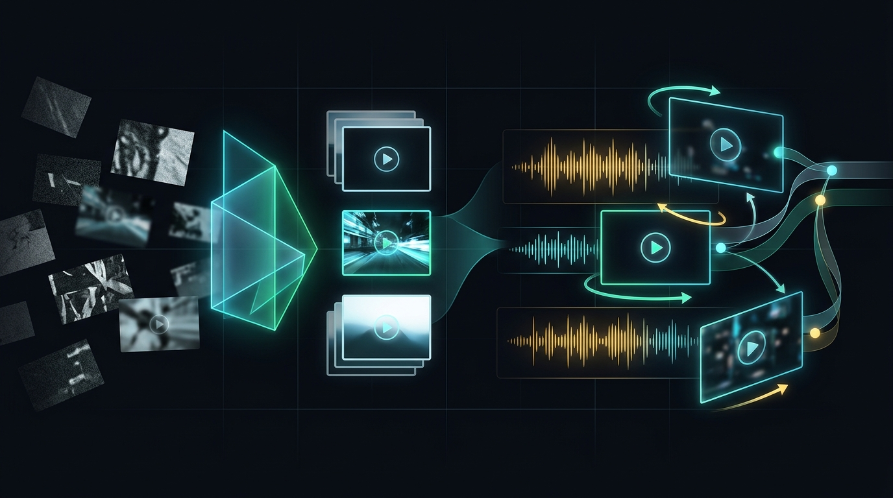

数据收集与清洗流水线：百亿像素是如何炼成「黄金燃料」的？
在大模型圈有一句大实话：「架构决定了你的上限，数据决定了你的下限，而清洗流水线决定了你的钱有没有打水漂。」 到了音视频生成时代，原始数据动辄 PB 级（数千万小时视频 + 数十亿张图片），95% 以上都是画质模糊、镜头乱跳、满屏水印、音画对不上的「垃圾」。这一章我们用大白话拆解一线实验室（如 MovieGen、Wan、HunyuanVideo、SVD、Open-Sora）是怎么搭数据漏斗的。

一、音视频数据到底从哪儿来？
训一个现代原生音视频大模型，靠几个学术小数据集（比如早年的 WebVid-10M、UCF-101）远远不够。工业界的数据池通常由五大来源按比例拼装而成：
1. 公开互联网视频（量最大）
YouTube、Vimeo、Bilibili、TikTok/Shorts 等公开长短视频，以及 Panda-70M、HD-VILA-100M、InternVid、Koala-36M 等开源索引集。覆盖面最广，但噪声极高，过滤淘汰率常达 85%–95%。
2. 影视剧、纪录片与专业素材库
高质量版权素材（Shutterstock / Pond5 / 电影预告片 / 自然纪录片）。运镜专业、构图稳、光影电影感强，是 Midtrain 和 SFT 阶段的「神仙水」。
3. 海量高质量图片库（亿级）
LAION 清洗子集、DataComp、摄影图库、艺术设计图、文字海报。用来帮视频模型补足「万物外观、长尾概念、构图美学、文字渲染」短板。
4. 强声画同步专项数据（音画核心）
访谈/演讲/播客（练口型唇动同步）、乐器演奏、ASMR、拟音 Foley 数据（如 VGGSound、AudioSet 精选、电影纯音效片段），专门用来教模型「什么动作发出什么声音」。
5. 合成与仿真引擎数据（新趋势）
Unreal Engine 5 / Blender 渲染的精准运镜数据、机器人仿真/物理引擎数据（碰撞、液体、布料）。自带精确的相机外参和物理真值，专治复杂物理幻觉。
二、工业级六道「数据大漏斗」流水线
假设我们爬下来 1 亿条原始长视频（平均 3 分钟一条），绝对不能直接扔给 GPU 算，否则既浪费电又把模型训傻。标准做法是按计算成本从便宜到贵串联成一个漏斗：先用毫秒级的 CPU 规则筛掉 70% 垃圾，再上轻量 GPU 模型，最后才动用昂贵的 VLM 做密集打标（Recaption）。
三、每一关的「潜规则」与踩坑细节
1. 为什么「镜头切分（Scene Cut）」是第一生命线？
一条 3 分钟的短视频里往往有几十次剪辑切换。如果你不切分，直接随机截 5 秒喂给模型，里面大概率包含一次「从室内突然闪切到海边」的硬切镜头。模型就会误以为「视频播到第 2 秒突然闪现到另一个世界是正常物理规律」，导致推理时画面莫名其妙乱跳镜！
工业界常用 PySceneDetect（基于 HSV 颜色直方图突变，CPU 极快）做粗切，再用 TransNetV2（深度学习镜头边界检测，能识别淡入淡出和渐变转场）做精切，并且习惯把每个切片的首尾各裁掉 0.2–0.5 秒，彻底避开转场残留帧。
2. 运动幅度（Motion Score）过滤：不是越动越好，而是要「掐头去尾」
用光流模型（如 RAFT、UniMatch、GMFlow）算出视频平均像素位移，你会看到一个经典的「两头毒药」分布：
- 运动太小（接近 0）：大概率是「配图朗读」「播客静态封面」「监控空镜」。这种样本混多了，模型学会了偷懒——直接生成一张几乎不动的图片，省事又保画质。
- 运动太大（极高）：往往是手持疯狂晃动、鬼畜剪辑、第一人称跑酷糊成一团。这种样本会破坏 3D-VAE 的时空连续性，导致生成画面果冻效应和严重撕裂。
- 黄金区间：保留中等偏上、主体动作清晰或运镜丝滑的样本；同时记录下每个 clip 的
motion_score，后续可以直接做成条件注入（类似 SVD 的 Motion Bucket ID），让用户自己控制画面动得多剧烈。
3. 水印、硬字幕与黑边：模型是最听话的「复读机」
只要训练集中有 3% 的视频角落带抖音号、电视台台标或者底部滚动硬字幕，模型生成时就会莫名其妙在画面底部吐出一串像鬼画符一样的乱码字幕。工程上通常做三件事：
- 用轻量 OCR（如 PaddleOCR / Craft）抽帧检测文字面积占比，超过阈值（例如 > 2%）直接丢弃或做安全裁剪（Crop）。
- 用专门训练的水印/台标检测器扫四角区域。
- 检测上下/左右纯色信箱黑边（Letterbox / Pillarbox），在裁剪后重新校验长宽比。
4. 音视频联合生成专属关卡：音频清洗比你想的难十倍！
做无声视频时，只要画面好看就行；但一旦要做 Veo 3 / LTX-2.5 / Ovi / MMX-H3 这种原生音画一体模型，互联网视频的音轨简直是灾难现场：
- 毒瘤 1：万能 BGM 覆盖一切。90% 的抖音/B 站视频都盖了一层响亮的背景音乐，画面里明明是海浪拍岸，声音却是电子舞曲。如果不筛掉，模型就学不会「海浪应该发出哗啦声」。
- 毒瘤 2：画外音（Voice-over）。画面里是一只猫在睡觉，音轨里是博主在喋喋不休解说。模型会困惑：声音到底是谁发出来的？
- 毒瘤 3：音画延迟（A/V Drift）。很多转码过的网络视频音频比画面慢 150ms–300ms，人眼勉强忍受，但训出来的唇动同步模型会永远「慢半拍」。
- 毒瘤 4：人声/音效/音乐混杂不清。工业界必须用 SyncNet / LatentSync 测唇音对齐分数，用 ImageBind / PE-AV / CAVP 算画面与声音的语义相似度，并用 Demucs / AudioSep 判断音轨里是不是纯 BGM，把「真实同步原声（Diegetic Sound）」和「解说配乐」严格区分并打标！
四、概念均衡（Concept Balancing）：别让模型只会画「美女和航拍」
互联网视频天然极度偏科：自拍、游戏录屏、美食、航拍风景占了半壁江山，而「化学实验」「复杂双人打斗」「精准手部操作」「动物捕猎」「微观物理」少得可怜。
如果不做重采样，模型就像偏科学生——画个街拍美女栩栩如生，一让它画「玻璃杯掉在地上摔碎溅起水花」就当场穿帮。主流做法（如 MovieGen、Wan 2.1/2.2）会先用视觉/文本 Embedding 对全库做 K-Means / 语义聚类（比如聚出 10 万个细粒度簇），然后对头部大簇做降采样（Down-sampling），对长尾稀缺物理动作做过采样（Up-sampling），确保每个训练 Epoch 都能均衡见识世间万物。
# 工业界数据清洗过滤配置示例（伪代码配置，直观展示各维度阈值）
pipeline_filters:
video_basic:
min_short_side: 480 # 预训练可放宽至 360p，Midtrain 提至 720p+
min_fps: 20.0
duration_sec: [2.0, 15.0] # 单镜头切片时长
visual_quality:
aesthetic_score_min: 4.8 # LAION / VILA 美学分（SFT 阶段提至 6.0+）
dover_tech_score_min: 0.45 # 清晰度/去模糊/去压缩伪影
ocr_text_area_ratio_max: 0.02
watermark_prob_max: 0.15
motion_dynamics:
raft_flow_mean: [0.8, 18.0] # 既拒绝静态 PPT，又拒绝剧烈鬼畜抖动
audio_visual_sync:
av_semantic_sim_min: 0.28 # PE-AV / ImageBind 声画一致性
lip_sync_conf_min: 3.5 # 含人脸说话片段必须过 SyncNet
bgm_only_reject: true # 拒绝纯 BGM 掩盖环境原声的片段数据清洗不是「把坏数据扔掉」那么简单，而是分层分级：普通干净数据喂给 Pretrain 学世界常识，高美学高运动高同步的 Top 5% 留给 Midtrain 和 SFT 拔高上限，而音画原声纯净度直接决定了原生音视频模型能不能听出「真实感」。